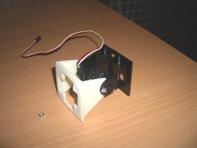
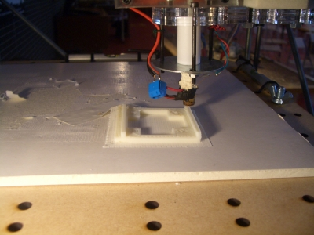
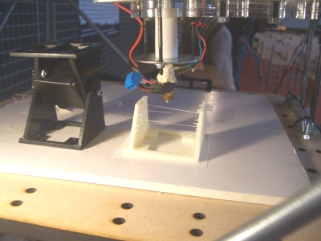
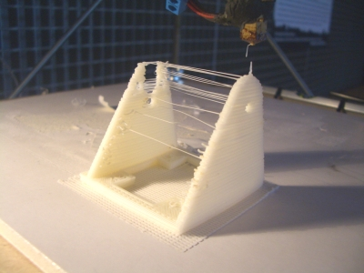
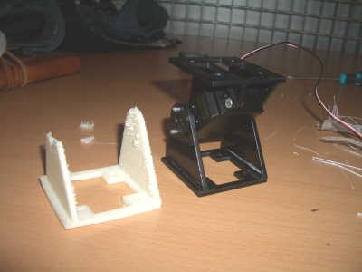
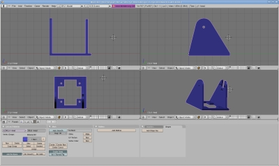
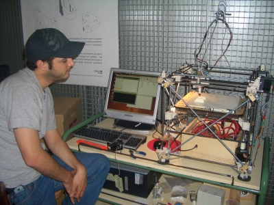
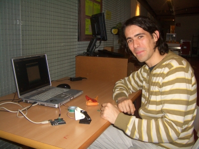

Utilizando la Reprap del Medialab-prado que construimos en el taller, he impreso mis dos primeras piezas, sin la supervisión de Zach Smith. La primera ha sido el clñasico vaso de chupito y la segunda la cabeza del módulo Y1.
Con la ayuda de Grabriel Lucas, construimos un módulo Y1 híbrido: la cabeza impresa con reprap y el cuerpo típico cortado por laser e hicimos algunas pruebas. Aquí podéis ver el vídeo:
El martes 17 de Febrero me fui al Medialab-prado por la mañana. El taller de Reprap se había acabado ese domingo. Los dos últimos días no había podido asistir, así que no sé cómo había quedado la máquina.

Después de realizar la impresión “hola mundo” del chupito y comprobar que
la impresora “imprimía”, envié la cabeza de los módulos Y1.
¡Fue un momento emocionante! ¿Imprimiría algo? Era la impresión de una pieza enteramente
diseñada por mí… En esta foto se puede ver la máquina en acción, sacando la base de la pieza:


Y en este la pieza está casi terminada. A su lado se ha colocado un módulo Y1:


Y este es el aspecto de la pieza nada más terminar la impresión:


Se aprecian varias cosas.
1) Al moverse el cabezal desde una de las partes laterales a otra,
quedan unos hilos muy finos de plástico (como si fuese una tela de araña).
2) Uno de los laterales no ha salido del todo bien, debido a un error de diseño mío
3) Los taladros de la base no han salido bien.
Una vez retirada la base y sacado de la máquina, la pieza tiene un aspecto como el siguiente. La parte lateral izquierda se rompió:


La pieza obtenida es un poco tosca, pero funciona. Grabril y yo sustituimos la cabeza del módulo Y1 por la nueva pieza y empezamos a moverlo. Se puede mejorar de varias maneras. Una aumentando el grosor de algunas partes y la otra modificando los parámetros de impresión. Como todavía soy un novato, desconozco cómo cambiar el grado de “solidez” de la pieza, pero se puede hacer más compacta.
En este pantallazo se puede ver la pieza diseñada con Blender:


La pieza está disponible en los siguientes enlaces, por si quieres echar un vistazo 😉
* Cabeza del módulo Y1 [Blender] [Formato STL]
La pieza en formato STL es la que se imprime.
En esta foto está Daniel Pietro, del Medialab-prado, observando cómo se imprime la pieza:


Y en esta otra foto está Grabril Lucas haciendo las pruebas de movimiento:


Muchas gracias a los dos por vuestra ayuda 🙂
Lo siguiente será modificar el diseño de la cabeza para hacerla más robusta e imprimir el cuerpo, con lo que se logrará, si todo va bien, tener el primer módulo Y1 enteramente impreso con Reprap!!
Alucinante!!!!
Que bueno Juan!!!
Con cada entrada de la movida esta flipo más… A ver si pronto puedes crear réplicas tuyas jejeje
Hola Juan,
Que bien te quedaron el artículo y la pieza. Yo estoy ahora ingeniándomelas para darle un poquito de movimiento a la torreta.
Tengo algunas ideas, ya te contaré.
Gracias Grabiel!
Estoy deseando ver esa torreta 😉
Hola.
Me he quedado alucinado con la máquina, hasta el punto que me he propuesto construir una. Pero, como soy profesor de Tecnología en un instituto, se lo he propuesto a un grupo de alumnos y ellos han aceptado el reto.
Desearía conseguir más información sobre la forma de iniciar el proyecto, piezas y materiales de partida; por ello te he enviado un correo a tu dirección personal.
Espero que me puedas orientar un poco.
Gracias de antemano y enhorabuena por los artículos.
Hola Eduardo,
Perdona el retraso en la respuesta. Ya te he mando un correo con más información. Me alegro de que te guste la máquina 😀 A mí me pasó lo mismo cuando supe de su existencia por Intenet y cuando me enteré de que su creador venía a Madrid a dar una conferencia casi me da algo 🙂
Somos ya unos cuantos los que queremos construirnos la máquina, así que estaremos en contacto.